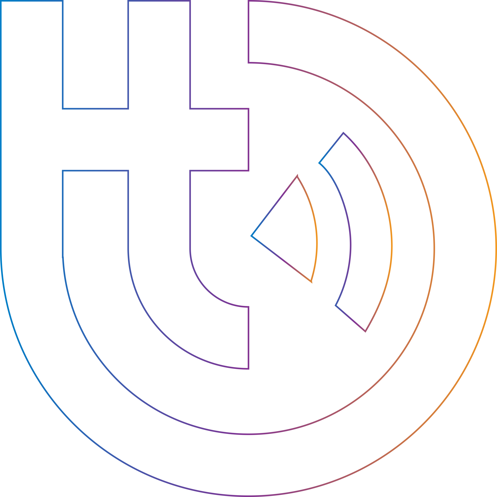

<!--
  Generated template for the SynchroniserPage page.

  See http://ionicframework.com/docs/components/#navigation for more info on
  Ionic pages and navigation.
-->
<!-- <ion-header>
  <ion-navbar>
   
  </ion-navbar>
</ion-header> -->

<ion-content >
<div class="flex">

  <div class="image">
    
  </div>
  <div class="innerbody">
    <!--  -->
    <div class="bottom">
      <span *ngIf="count != total_load">Synchronizing ... {{count}}/{{total_load}}</span>
      <span  *ngIf="count == total_load">Synchronization Done !</span>
      <!-- <button ion-button *ngIf="count == total_load" (tap)="app()">Let's Go</button> -->
    </div>
  </div>
</div>

</ion-content>